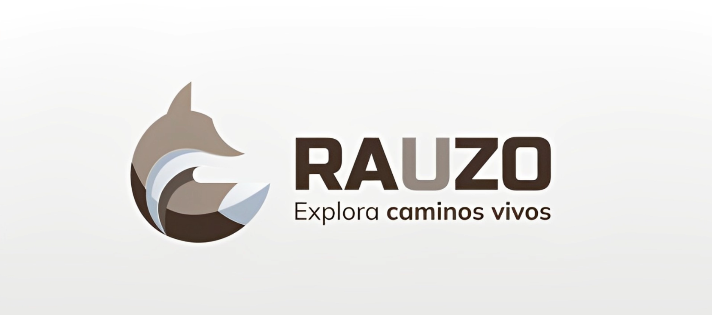

Rauzo is a project developed in collaboration with the Sustainability Office of the University of Medellín, aimed at representing the fauna, flora, and landscapes of this educational environment through a 2D runner video game. In the game, we control Raúl, a dog fox, the university's emblematic animal and guardian, who prepares to face a great threat. Additionally, the project engages the educational community through the search for QR codes with augmented reality models, which unlock collectibles representing species present on the campus.
Images

Contribution
My contribution to the development included programming the scene transitions, map movement, menu functionality, and the augmented reality system. The graphic design of the project was created entirely from scratch, thanks to the work of my team, composed of four students from the Communication and Digital Entertainment program at the University of Medellín, who were responsible for designing levels, backgrounds, characters, dialogues, and other visual elements.
Awards
Rauzo won second place in the "Futurista 2023" contest, organized by Hola Metaverso. In this competition, innovation and the integration of physical spaces with augmented reality were evaluated, with the project being recognized for its creativity and focus on the appropriation of the university environment.